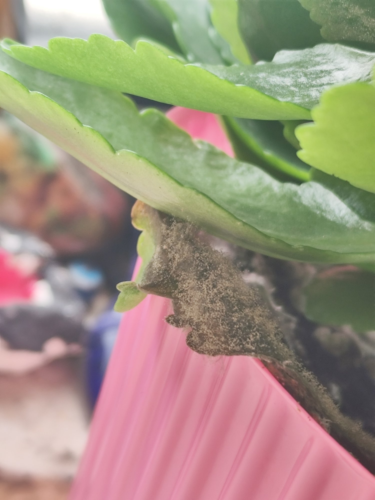

← Toutes les fiches · Maladie · champignon
Botrytis cinerea

Champignon responsable de nombreuses maladies courantes des cultures de serre. Il est partout : les spores sont toujours présentes. L'infection se fait quand des conidies en germination pénètrent un tissu sain et tendre de feuille ou de fleur, un stomate ou une blessure, ou quand du mycélium ou un tissu infecté touche un tissu sain, typiquement une fleur ou une feuille infectée tombée sur une feuille mouillée. Des infections latentes restent invisibles jusqu'à ce que les conditions changent.
Temps frais, mouillé ou humide. Conditions optimales : 15 à 23 °C et humidité relative supérieure à 90 %, ou eau libre microscopique sur un tissu plus froid que l'air. Les variations d'humidité relative déclenchent la libération des spores; la germination peut se faire en moins de trois heures. Repères de la publication : humidité relative sous 85 % et feuilles jamais mouillées plus de 3 à 4 heures.
Inspecter feuillage et fleurs chaque semaine; regarder les fleurs fanées, les feuilles sénescentes et les endroits où des pétales sont tombés sur le feuillage.
La plupart des fleurs, dont le cyclamen, le géranium, le rosier et le poinsettia; tissus tendres et riches des fleurs et des bractées, sains ou sénescents.
Fiche du guide Parcelle, version 2026-11-15b. Aucune recommandation de traitement. Les publications de l'Ontario sont écrites pour l'Ontario.